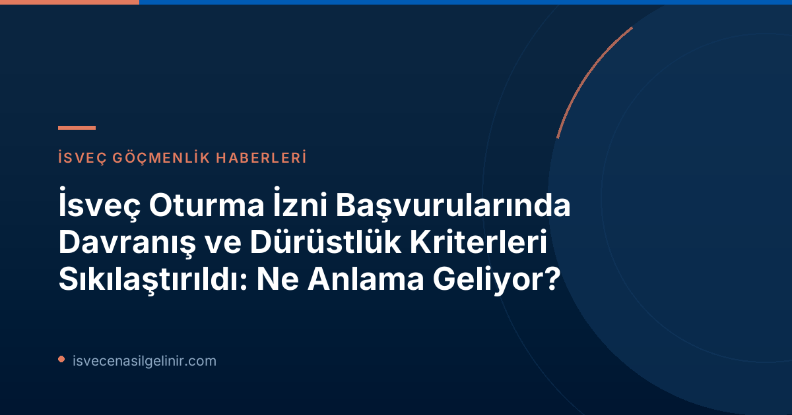

Yeni Düzenlemelerin Arka Planı ve Amacı
İsveç Göçmenlik Ofisi Migrationsverket, toplum düzenini ve kurallara uygunluğu sağlama hedefiyle oturma izni süreçlerinde önemli bir adım attı. 13 Temmuz 2026 tarihinden itibaren yürürlüğe giren yeni yasal düzenlemelerle birlikte, "vandel" (davranış ve dürüstlük) kriterleri sıkılaştırıldı. Bu değişiklikler, Migrationsverket'e, başvuru sahibinin davranışsal veya dürüstlükle ilgili eksiklikleri nedeniyle oturma izni talebini reddetme ya da hali hazırda verilmiş olan bir oturma iznini iptal etme konusunda daha fazla yetki tanımaktadır. Oskar Ekblad, Migrationsverket'in suistimalleri tespit etme ve bunlarla mücadele etme çabalarının lideri olarak, bu adımın sadece suç teşkil eden eylemleri değil, aynı zamanda toplumun sürdürmek istediği kuralları ihlal eden davranışları da kapsadığını belirtiyor."Vandel" Nedir ve Nasıl Değerlendirilecek?
"Vandel", bir kişinin iyi halini, dürüstlüğünü ve kurallara uygunluğunu ifade eden bir kavramdır. Migrationsverket, oturma izni başvurularını değerlendirirken, başvuru sahibinin "vandel" açısından eksiklikleri olup olmadığını belirlemek için kapsamlı bir inceleme yapacaktır."Vandel" Değerlendirme Kriterleri
- **Suç Teşkil Etmeyen Ancak Kurallara Aykırı Eylemler:** Kişinin illa bir suç işlememiş olsa dahi, toplumsal kurallara veya yasalara aykırı davranışlarda bulunması.
- **Yanlış Bilgi Verme:** Başvuru sürecinde veya diğer resmi işlemler sırasında kasıtlı olarak yanlış veya yanıltıcı bilgi sunulması.
- **Dürüst Olmayan Yollarla Geçim Sağlama:** Gelir elde etme yöntemlerinin yasal veya etik olmaması.
- **Organize Suç Ağlarıyla İlişkili Olma:** Suç örgütleriyle doğrudan veya dolaylı bağlantıların bulunması.
- **Tekrarlayan Kurallara Aykırı Davranışlar:** Küçük çaplı olsa bile, zaman içinde tekrar eden kural ihlalleri veya düzenlemelere uymama durumları. Tekil, ciddi olmayan küçük olaylar genellikle ret sebebi oluşturmazken, tekrarlayan davranışlar değerlendirmede önemli bir rol oynayacaktır.
Migrationsverket Hangi Bilgileri Toplayabilir?
Migrationsverket, bir başvuru sahibinin "vandel" durumunu değerlendirirken, sadece adli sicil kayıtlarıyla sınırlı kalmayacaktır. Kurum, diğer devlet dairelerinden de bilgi toplama yetkisine sahiptir. Bu bilgiler şunları içerebilir:- **Ödeme Emirleri (Betalningsförelägganden):** Kişinin ödenmemiş borçları veya icra takipleri olup olmadığı.
- **Geçim Desteği (Försörjningsstöd):** Sosyal yardım veya geçim desteği başvurularında verilen bilgiler.
- **Sosyal Sigortalar ve Yardımlar:** Sosyal güvenlik sisteminden alınan veya başvurulan faydalarla ilgili bilgiler.
Bireysel Değerlendirme İlkesi
"Vandel" kriterlerinin incelenmesi tamamen bireyseldir ve her dosyanın kendine özgü koşullarına bağlıdır. Oturma izninin hangi yasal zemine dayandığı da bu değerlendirmede etkili olacaktır.Yeni Kuralların Kapsamı: Kimleri Etkiliyor, Kimleri Etkilemiyor?
Yeni ve sıkılaştırılmış "vandel" gereklilikleri, İsveç'teki tüm oturma izni başvurularını aynı şekilde etkilememektedir. Belirli kategorilerdeki başvurular bu yeni düzenlemelerin dışında tutulmuştur.Önemli İstisnalar ve Uygulama Alanları
- **Etkilenenler:** AB Hukuku'na dayanmayan oturma izinleri (örneğin, İsveç ulusal yasalarına göre yapılan bazı çalışma izinleri, bazı aile birleşimi başvuruları vb.) genellikle bu sıkılaştırılmış "vandel" gerekliliklerine tabidir.
- **Etkilenmeyenler:**
- **Uluslararası Koruma (Sığınma) Başvuruları:** Uluslararası koruma talep edenlerin (mülteciler) oturma izni başvuruları, yani uluslararası koruma mevzuatı kapsamında değerlendirilen başvurular, bu sıkılaştırılmış "vandel" kurallarının dışında tutulur.
- **AB Hukuku'na Dayanan Oturma İzinleri:** AB Hukuku (bir dizi direktif) kapsamında çalışma, eğitim veya aile birleşimi gibi nedenlerle yapılan oturma izni başvuruları da bu yeni "vandel" gerekliliklerinden muaftır. Bu, örneğin bir AB/AEA vatandaşı ile aile birleşimi yapmak isteyen bir üçüncü ülke vatandaşını veya AB Mavi Kartı gibi özel izinleri kapsayabilir.
Unutmayın ki İsveç'teki yasal süreçleri doğru anlamak ve doğru adımları atmak büyük önem taşır. İsveç Vatandaşlık Sınavı konularında da güncel bilgiye sahip olmanız faydalı olacaktır.
Başvuru Sahipleri İçin Öneriler ve Dikkat Edilmesi Gerekenler
İsveç'te oturma izni başvurusu yapmayı düşünen veya mevcut iznini korumak isteyen herkesin, bu yeni düzenlemeler ışığında dikkatli olması gerekmektedir. İşte size birkaç öneri:| Öneri | Açıklama |
|---|---|
| **Tam Dürüstlük ve Şeffaflık** | Başvurunuzda veya resmi kurumlara verdiğiniz tüm bilgilerde her zaman tam dürüstlük ve şeffaflık ilkesine bağlı kalın. Yanlış veya eksik bilgi vermekten kesinlikle kaçının. |
| **Yasalara ve Kurallara Uyum** | İsveç yasalarına ve toplumsal kurallarına her alanda tam uyum sağlayın. Trafik kurallarından vergi yükümlülüklerine kadar tüm düzenlemelere dikkat edin. |
| **Mali Sorumluluk** | Mali yükümlülüklerinizi düzenli olarak yerine getirin. Ödenmemiş borçlar, para cezaları veya icra takipleri, "vandel" değerlendirmesinde olumsuz bir etki yaratabilir. |
| **Kötü İlişkilerden Kaçınma** | Organize suç ağları veya diğer yasa dışı faaliyetlerle herhangi bir bağlantıdan uzak durun. Bilinçli veya bilinçsiz olarak bu tür oluşumlarla ilişkilendirilmeniz başvurunuzu riske atabilir. |
| **Tekrarlamayan Davranışlar** | Küçük dahi olsa, yasalara veya kurallara aykırı davranışları tekrarlamaktan kaçının. Tekil bir hata genellikle tolere edilebilirken, tekrarlayan davranışlar ciddi sorunlara yol açabilir. |
Bu yeni düzenlemeler, İsveç'in göç politikalarında daha titiz bir yaklaşım benimsediğinin bir göstergesidir. Başarılı bir başvuru süreci için verilen tüm bilgilerin doğru ve eksiksiz olması, aynı zamanda İsveç toplumunun değerlerine ve kurallarına saygı gösterilmesi kritik öneme sahiptir.
Referanslar: Migrationsverket resmi duyurusu: https://www.migrationsverket.se/nyhetsarkiv/nyhetsarkiv/2026-07-13-skarpta-krav-pa-skotsamhet-och-hederlighet.html
İsveç Göçmenlik Süreçlerinde Destek Alın
İsveç'e göçmenlik süreçleri karmaşık olabilir. En güncel bilgilere ulaşmak ve başvurularınızı doğru bir şekilde yapmak için uzman danışmanlık hizmetlerimizden faydalanın.